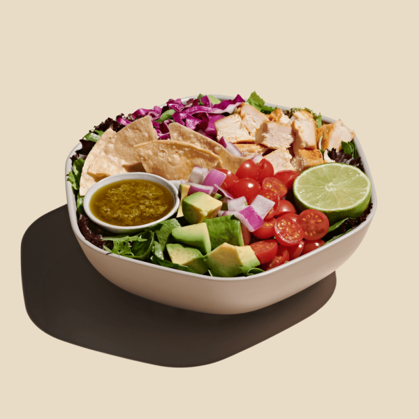

Guacamole Greens

Description
YUM!!
Ingredients
- Roasted chicken
- avocado
- tomatoes
- red onions
- shredded cabbage
- tortilla chips
- spring mix
- chopped romaine
- lime squeeze
- lime cilantro
- jalapeño vinaigrette
Instructions
- Prepare Vinaigrette: Combine all ingredients in a blender, or small food processor bowl. Puree or pulse ingredients together, until mixture just begins to come together, and cilantro is still finely chopped. Set aside in a small container. Shake before using.
- Salad: In a large bowl, place the cooked chicken, halved tomatoes, diced red onion, crushed tortilla chips, avocado, and mixed spring greens. Squeeze the wedge of lime over the salad, then toss the salad lightly with lime cilantro jalapeño vinaigrette. Serve immediately